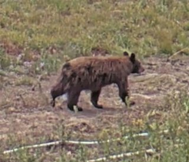
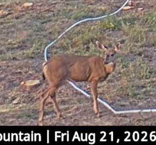
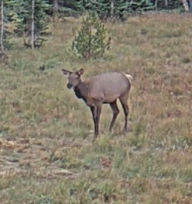

Harbour seal, reviewed
Hind flippers are visible in the reviewed frame; this is the confirmed marine mammal example from the run.
- Source
- MaST Center Aquarium video bridge
- Evidence
- reviewed frame plus high-quality bundled video clip
Salish Sea and Mount Rainier, recorded around the clock
Wildlife detection from public hydrophones, underwater video and mountain cameras in Cascadia, including what is unreviewed and where the models were wrong.
Reviewed solid border. Model output dashed.
Hind flippers are visible in the reviewed frame; this is the confirmed marine mammal example from the run.
A real and unusual animal in Puget Sound. YOLO-Fish called fish with high confidence; the open-vocabulary pass called harbor seal.

A larger bear and smaller bear are visible together in the lower meadow on 2026-08-21 after source-window review.
A visible fish with dorsal fin was labeled harbor seal by the open-vocabulary pass.

MegaDetector surfaced the frame; the deer label comes from human review of the full-frame context.
A ten-minute Southern Resident bout at Orcasound Lab on 2026-08-26, 21:24 to 21:35 UTC. Fifteen consecutive 30-second windows are published, every one of them classified Southern Resident at 0.99 or above. The window shown here is the densest, with 13 positive segments. 29 of 30 windows in the local encounter cluster called SRKW above the site floor.
The opening window of the 2026-08-26 encounter at 21:24:44 UTC, three positive segments. The bout builds from here. Ecotype 1.00 Southern Resident, OrcaHello 0.97.
The closing window at 21:34:45 UTC, ten minutes after the first. Nothing above the site floor follows it that day. Ecotype 1.00 Southern Resident, OrcaHello 0.93.
The August hydrophone analysis found a clustered Bigg's-class ecotype signal at North San Juan Channel that survived the site-specific floor and independent-record comparison. Six full 30-second windows from the 2026-08-15 cluster are now playable.

SpeciesNet labelled this american black bear at 0.97 on 2026-08-21 19:02:59 UTC; MegaDetector drew the box at 0.88. Unreviewed model output.

SpeciesNet labelled this mule deer at 1.00 on 2026-08-21 14:17:19 UTC; MegaDetector drew the box at 0.88. Unreviewed model output.

SpeciesNet labelled this cervus species at 0.96 on 2026-09-04 14:40:39 UTC; MegaDetector drew the box at 0.87. Unreviewed model output.

On 2,055 frozen detections from the same two hours of aquarium footage, correcting one conflict rule took the queue from 474 to 32. No detection changed, so the difference is the decision layer and nothing else.
Captured video from the Friday batch was already water-blocked, so this report treats the window as source-quality evidence rather than absence of fish or marine mammals.
A persistent resonance explained most Bush Point Southern Resident detections, showing why public pages need floor checks and source-quality context.
The highest-scoring seal candidate in the widest run, at 0.79, has a visible dorsal fin and tail. Open-vocabulary labels are prompts for review, not species.
No featured finding matches that combination.
Newest data first. Each row links to the report and its report.json.
Continuous hydrophone audio from the Salish Sea, analysed for killer whale call presence and ecotype consistency.
OrcaHello. Binary call-presence detector. It does not identify pod, individual, or call type.
Ecotype classifier. Reports which population a call is more consistent with. It is a comparison, not a determination. Its authors found it less reliable on hydrophones other than those it was trained on; Orcasound is one of those it was trained on.
Underwater video from the MaST Center Aquarium pier in Puget Sound, analysed for animal presence.
YOLO-Fish. Marine mammal labels are review candidates from open-vocabulary prompts, not confirmed species.
MegaDetector. Detects that an animal is present, not which species it is.
Public National Park Service webcams, analysed for large mammal presence against a per-camera false positive floor.
MegaDetector. Detects that an animal is present, not which species it is.
SpeciesNet. Names the species in a MegaDetector box. At Sunrise its white-tailed deer labels are black-tailed deer, and an unnamed "animal" is usually a person crouching.
Full method, including false-positive floors, media rights, and approximate locations, is in METHODS.md. Machine-readable site data is in site-data.json.
These pages, the code that produced them and this prose are written with AI coding agents under human direction, and reviewed before publication. How these reports are produced.